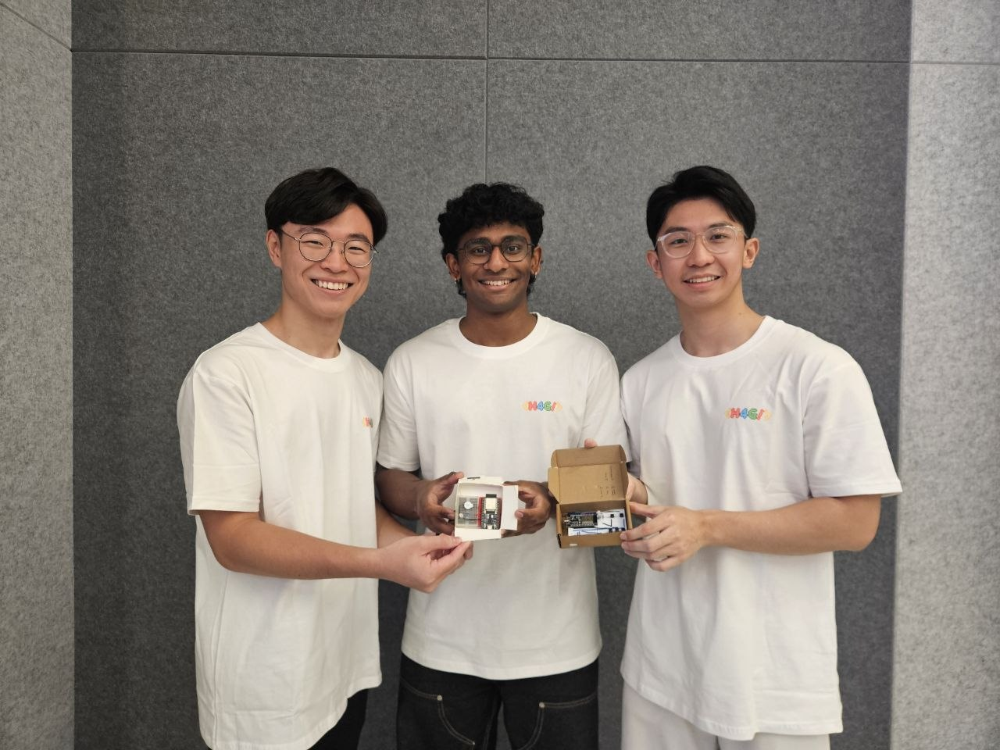

CareSync | Hack4Good 2026
Repo LinkCareSync is a real-time companion dashboard for caregiver support. It takes in device feedback events, streams live updates to the UI, and uses a lightweight ML pipeline to predict the next likely need.
The project uses 2 ESP32 microcontrollers acting as wearable devices, to allow the elderly residents to quickly communicate needs to their designated caregiver. Using UDP for the lowest overhead, button presses are sent from elderly device to caregiver device, which then sends the event to a backend server for easy tracking by the caregiver.
An LED on both devices lights up with a corresponding colour for different needs, such as "Tired", "Pain", and "Happy". These alerts can be customised for different users
First finals run in a hackathon, was just happy to be there. Unfortunate we didn't podium, but good experience pitching nonetheless!
